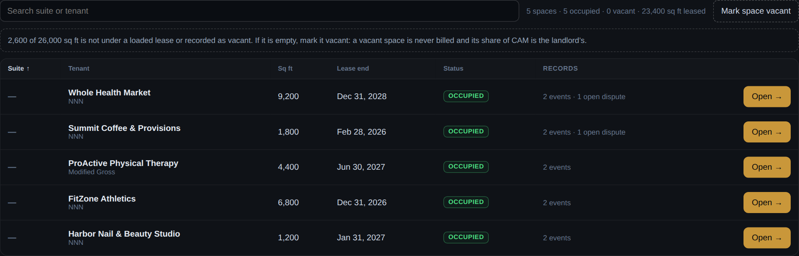
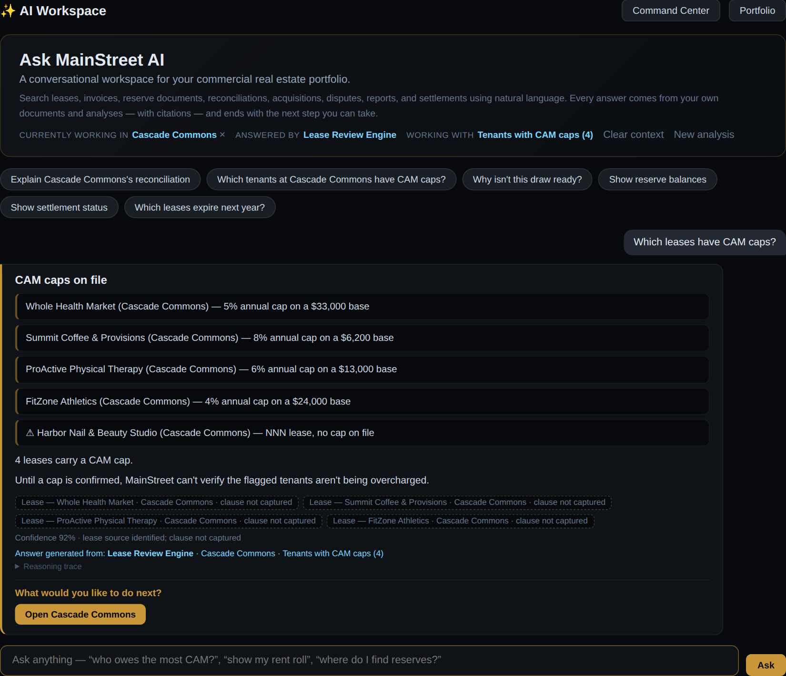
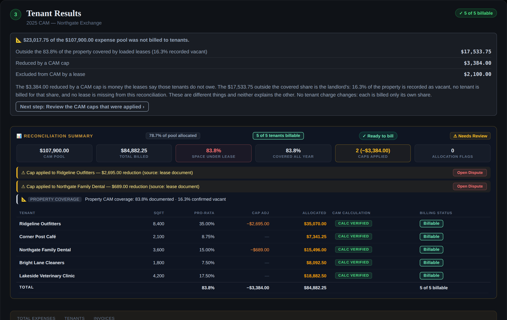
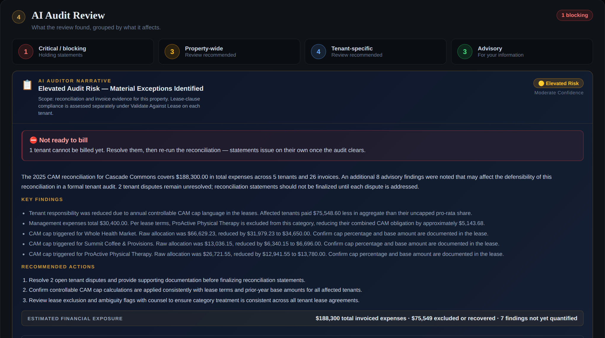
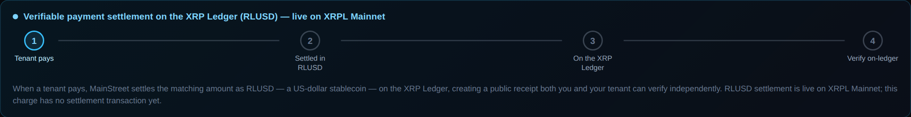

The verified memory for every commercial property.
MainStreet brings a property’s leases, documents, tenants, spaces,
invoices, CAM, disputes, and history into one verified system. Ask a question
and get an answer grounded in the property’s own records — with the
evidence behind it.
Built in the open. One real RLUSD settlement, verified on the XRP Ledger mainnet — see the transaction.
See how it works
MainStreet — AI Command Centerlive demo · demonstration data
01
Leases
Read and understood, with the clause behind each term.
02
Documents
Filed where a manager would look. Scans included.
03
Tenants & Spaces
Who occupies what, and what each lease requires.
04
Invoices
Every cost, with its source document.
05
CAM
Reconciled, capped and checked against the lease.
06
History
Dates, disputes and decisions, never rewritten.
07
Ask
Answers from the property’s own records, with proof.
See it in action
A property manager has a question. MainStreet finds the answer.
Pick a question. Everything below comes from one demonstration property, Cascade Commons, and its own records.
Why can’t we bill Whole Health Market more than $34,650?
Reads the leaseA 5% cap on the tenant’s share. Last year: $33,000.
Checks the expenses$188,300 across 26 invoices, each with its source document.
Applies the tenant’s rulesA 35.38% share comes to $66,629.23 before the cap.
Finds the answer$33,000 plus 5% is $34,650. The lease keeps the rest with the landlord.
✓
$34,650Capped by lease §6.4. The $31,979.23 above it is not recoverable.
Retail Lease AgreementCascade Commons · Whole Health Market
6.4 Cap on Common Area Maintenance Costs. … Tenant’s Proportionate Share of Common Area Maintenance Costs payable in respect of any calendar year shall not increase by more than five percent (5%) over the amount … payable in respect of the immediately preceding calendar year. Any Common Area Maintenance Costs in excess of the foregoing cap shall be borne solely by Landlord …
6.5 Base Amount. … Tenant’s Proportionate Share … for the immediately preceding calendar year was Thirty-Three Thousand and 00/100 Dollars ($33,000.00).
Page 2 of 3 · §6.4 · §6.5
5% cap appliedMaximum recoverable $34,650
A demonstration lease, quoted as written. The clause is the evidence.
What does the Whole Health Market lease actually require?
Reads the documentThree pages, read in full — a scanned copy would do.
Finds each termPremises, share, term, lease type, the CAM cap, the exclusions.
Keeps the sourceEvery term carries the section it came from and the words it came from.
Says how sure it isA confidence score on what was read. A gap is reported, never filled.
✓
Seven termsEach with the clause it came from. Nothing guessed.
Lease terms, as readCascade Commons · Whole Health Market
PremisesSuite 100 · 9,200 rentable sf§1.1 · 97%
Building26,000 rentable sf§1.2
Share35.38%§1.3
TermJan 1, 2021 – Dec 31, 2028§1.4–1.5
Lease typeTriple net (NNN)§1.6 · 96%
CAM cap5% over the prior year, from $33,000§6.4–6.5 · 95%
ExclusionsNone§6.6
3 pages · 7 terms · 3 scored
The percentages are the reader’s confidence in what it read. Where none is shown, the term was confirmed against the page.
What should I look at today at Cascade Commons?
Reads the disputesTwo open. Each names the invoice it questions.
Checks the reconciliationOne statement held, one waiting on a confirmation.
Checks the review queueOne lease flagged for a second look.
Puts it in one listEach item opens the record that raised it.
✓
Five items todayNothing typed in twice, nothing remembered by hand.
Needs attentionCascade Commons · today
DisputeWhole Health Market asks for itemized receipts on $17,100 of work orders
DisputeSummit Coffee & Provisions questions an emergency HVAC repair — common area?
HeldProActive Physical Therapy — Modified Gross lease; confirm what CAM covers before billing
ConfirmSummit Coffee & Provisions — parking is excluded by lease and not yet applied
ReviewOne lease flagged for review
2 disputes · 2 statements waiting · 1 review
The list is built from the records, not from a to-do app. Resolve the record and the item goes.
Is the 2025 CAM reconciliation for Cascade Commons ready to bill?
Reads five leasesFour caps, two exclusions, one Modified Gross lease.
Checks 26 invoices$188,300, every invoice with its source document.
Applies each tenant’s rulesShare, cap and exclusions, tenant by tenant.
Gives a verdict per tenantThree ready. Two held, with the reason named.
✓
3 of 5 ready to billNothing goes out that the records can’t support.
Tenant resultsCascade Commons · 2025 CAM
Whole Health Market$34,650.00 · cap appliedReady
FitZone AthleticsShare appliedReady
Harbor Nail & Beauty StudioShare applied, no cap on fileReady
Summit Coffee & ProvisionsParking exclusion to confirmConfirm
ProActive Physical TherapyModified Gross lease to confirmHeld
3 of 5 billable · $188,300 in expenses
Held is a verdict, not a failure. A statement the lease can’t support does not go out.
What is CAM reconciliation?
CAM reconciliation is the process of figuring out how much of a property’s shared operating costs each tenant actually owes, according to their lease.
MainStreet does that work for you, and shows you why the answer is correct.
▦
It’s shared expenses
Tenants pay a share of a property’s common area costs: parking, lighting, landscaping, snow, security.
▤
Each lease has rules
Leases define how much each tenant owes: their share, any caps, and what is excluded.
✓
MainStreet does the work
Reads the leases and the invoices, applies the rules, and shows what can be recovered, with the evidence behind it.
CAM is one question MainStreet can answer. The same record answers questions about leases, documents, tenants, spaces, invoices, disputes, important dates, warranties and history.
For judges & reviewers
Understand it. See it. Try it. Verify it.
Built for the XRPL Commons Make Waves challenge. Start with the film, watch the walkthrough, then open the demo. The ledger and the code are here for anyone who wants to check.
MainStreet — product walkthroughrecorded in the pilot · demonstration data
See MainStreet work a property from lease document to verified decision.
The demo is a read-only copy of demonstration data, served by MainStreet’s pilot environment and kept separate from customer production. Two fictional properties: Cascade Commons (26,000 sf, 5 tenants, 26 invoices, the reconciliation above) and Northgate Exchange (24,000 sf, 5 leases, 16 invoices, one recorded vacancy). It runs entirely in your browser: no account, no database behind it, and nothing you do is saved — reload and it is back as it was. The settlement it shows is the real RLUSD transaction on XRPL mainnet; the demo cannot sign or move funds, and neither can the app.
Generative AI is used in exactly one place: reading documents. Allocation, caps, answers and verdicts are deterministic computation over verified data — ask twice, get the same answer twice. What is deliberately not built yet is stated below, not hidden.
Remember
Every property remembers.
Open a building and its organised record is there: taxes, insurance, financing,
agreements, building systems, invoices and history — filed where a manager
would look, each record linked to the documents behind it.
A filing cabinet, not a feed
Records land in the drawer they belong to, with the year and the vendor they came from.
Important dates, derived
Renewals, expiries, inspections and maturities come from the records — never typed in twice.
Spaces as living records
Each suite carries its lease, its CAM share, its disputes and its own activity.
History that is never rewritten
Every act on a property is recorded with who did it. Entries are added, never edited away.
Dates come from records. An insurance renewal, an inspection, a loan maturity, a roof warranty — each one points back at the record it was derived from.
Spaceslive demo

Every space accounted for. Square footage under no lease is named, not assumed — a vacant space is never billed, and its share of CAM is the landlord’s.
Read with evidence
Every number. Every source.
Every term MainStreet reads from a lease keeps the quote it came from, the page
it sits on and a confidence score. When the clause isn’t there, it says so
— it never fills the gap.
Quote and page on every field
A CAM cap, a term, an exclusion — each traces to the lease language that authorises it.
Confidence, stated
A missing score is not a high score. Low confidence is flagged for review, never hidden.
Honest gaps
“Clause not captured” is an answer. So is “no cap on file.”
Ask anything, get a citation
Answers come from the property’s own documents and analyses — or MainStreet says it can’t answer.
AI Workspace — “Which leases have CAM caps?”live demo

Reconcile
CAM as a workflow, not a spreadsheet
Prepare → Calculate → Tenant Results → AI Audit Review. Every tenant gets a billing verdict — and when a statement can’t go out, MainStreet names the reason and holds it.
Northgate Exchange — Tenant Resultslive demo

Northgate bills. Five of five tenants billable. Two caps applied, each with its source named. The vacant share stays with the landlord and says so.
Cascade Commons — AI Audit Reviewlive demo

Cascade is checked. Twenty-six invoices, every one with its source document. Three of five statements are ready; one waits on a confirmation and one is held — and the audit names both. Knowing when not to bill is the product.
Caps from the lease
A cap is applied only with a stated base, and the reduction names the clause it came from.
Exclusions honoured
A lease that excludes management from CAM is struck from that pool — and the audit says so.
Coverage, in two numbers
Documented by lease versus confirmed vacant — never one figure that hides the difference.
Stale results marked
Change an input after a run and the results say they no longer describe it.
▶
See it run, then open it
Fifty seconds from a lease landing to a settlement verified on the ledger. Then open the live demo and walk the same two properties yourself.
MainStreet settles in RLUSD — Ripple’s US-dollar stablecoin — on the XRP Ledger mainnet, and the first settlement is already on the public ledger. Here it is.
rMxCKbEDwqr76QuheSUMdEGf4B9xJ8m5De — Ripple’s official mainnet issuer; both wallets hold a trust line to it
Source Tag
2606290001 — carried on every MainStreet payment and trust line, so the project’s activity is identifiable on-ledger
Memo
A SHA-256 fingerprint of the settlement record — the destination, the amount and the network the payment was built from — with the amount alongside it in clear. Anyone with the record can recompute the hash and verify that it matches the fingerprint committed to the transaction.
Reads the transaction from public XRPL nodes and checks that it is a validated Payment (tesSUCCESS), sent from the settlement wallet, in RLUSD from Ripple’s official issuer, and that it carries a memo. It prints the destination and the Source Tag for you to compare. It does not recompute the fingerprint — that is the arithmetic above.
The RLUSD payment from the settlement wallet to the landlord wallet, validated on mainnet.
MainStreet’s Source Tag on the payment and on both trust lines.
A SHA-256 fingerprint of the settlement record (destination, amount, network) in the transaction memo, with the amount in clear.
Two funded wallets with RLUSD trust lines to the official issuer.
All of it verifiable on livenet.xrpl.org — infrastructure MainStreet does not control.
What is not — yet
In-app payment. Settlement is signed by an operator from a local script. The web app reads the ledger; it cannot sign. Keys never touch a server.
Records on-chain. Leases, reconciliations and property history stay off-chain. Only the settlement and its fingerprint are recorded — no private data is published.
One wallet per property. One settlement wallet serves the demo today. Per-property wallets and tenant-initiated payment are the roadmap the transaction format was designed for.
The settlement journey, in the productlive demo

A reconciled statement shows where it stands on that path. A statement with no transaction says so — a live rail is never evidence that this charge was paid.
The platform
Built for the way property managers work
⛊
Security by construction
Row-level access per organisation, private document storage behind signed links, and AI instructions owned by the server — never by the caller.
▤
Document intelligence
Leases, amendments, invoices and certificates are read, organised and searchable — scans included, with the page cited.
◷
Property memory
An append-only history of everything that happened at a property and at every space within it, with who did it.
↗
Settlement proof
RLUSD on the XRP Ledger mainnet, with a public transaction anyone can verify. Operator-signed today; the app itself only reads the ledger.
◆
Run your first property through it
A pilot is your real property and your real leases — uploaded, reconciled, and provable. We reply personally.